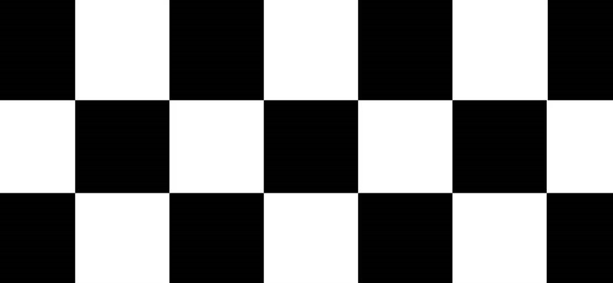
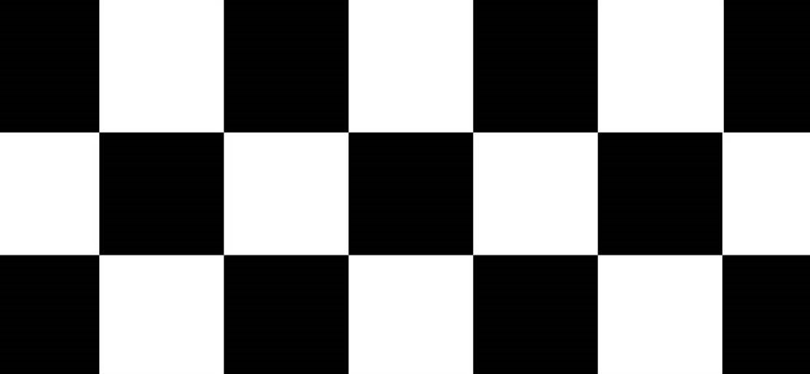

Michael Schumacher
–Siempre he creído que nunca debes rendirte y que siempre debes seguir luchando–
Piloto aleman y uno de los mejores de la historia de la Fórmula 1
Títulos: 7 (1994, 1995, 2000, 2001, 2002, 2003 y 2004)
Equipos: Jordan, Benetton, Ferrari y Mercedes
Padres: Elisabeth y Rolf Schumacher
Cónyuge: Corinna Betsch (m. 1995)
Hijos: Mick, Gina-Maria
Apodos: Schumi, Káiser, Rain Máster
 

Linea del tiempo de la carrera del "Káiser" Michael Schumacher
- 1969 - Nacía en Hürth-Hermülheim, Alemania Occidental, un niño que traía un volante bajo el brazo. Con tan solo cuatro años se subía a un kart que su padre, mecánico de profesión, le había construido sobre la base de un kart de pedales. El mito se iba haciendo mayor, y los trofeos iban llegando. Con 15 años quedaba subcampeón del mundo en la misma especialidad, premio al que le acompañaban, tres años más tarde, el de campeón alemán y europeo.
- 1988 - Conquistaba el campeonato de la Fórmula Koning alemana y poco después, ya en la Fórmula Ford 1600, lograba una sexta plaza en el Campeonato del Mundo y se subía en lo más alto del cajón en el de Europa. Sus éxitos le obligaron a dejar la escuela, compaginando su pasión con el trabajo de mecánico en el taller del concesionario Volkswagen de su ciudad natal.
- 1989 - Cuando Michael llegara a la Fórmula 3, campeonato en donde solo pudo hacerle sombra Karl Wendlinger.
- 1991 - Su bautismo en la F1 en el Gran Premio de Bélgica, de la mano de Mercedes, aunque no duraba mucho como piloto de esta escudería siendo fichado después por Benetton.
- 1992 - Obtendría su primera victoria en el Gran Premio de Bélgica, misma temporada en la que consiguiera ocho podios y quedara tercero de la general, por delante del grandioso piloto Ayrton Senna.
- 1994 - Se proclamó campeón mundial de Fórmula 1, año en el que mantuvo una gran rivalidad con el británico Damon Hill.
- 1996 - Tras haber sumado 19 victorias en grandes premios, pasó a formar parte del equipo Ferrari, temporada en la que quedó tercero en la clasificación final de pilotos después de haber vencido en los grandes premios de España, Bélgica e Italia.
- 1999 - Sufrió un accidente en Silverstone, dónde se llegó a temer por su vida.
- 2002 - Se proclamó campeón del mundo de Fórmula 1 por quinta vez, tras lograr la victoria en el Gran Premio de Francia.
- 2003 - Se proclama campeón del mundo de Fórmula 1 por sexta vez, cuarta consecutiva, tras clasificarse en octava posición en el Gran Premio de Japón.
- 2004 - Se aseguró matemáticamente su séptimo título mundial de Fórmula 1 al acabar en segunda posición en Spa-Francorchamps, Gran Premio de Bélgica.
- 2006 - A los 37 años, después de más de 25 dedicados a las carreras, con siete campeonatos del mundo en 16 temporadas en la Fórmula 1, decide retirarse de la competición.
- 2010 - El «Káiser» regresa a la competición de la mano de Mercedes aunque con no demasiada suerte. La primera temporada el rendimiento de su coche no era el esperado, un hecho que también le persigue en la siguiente pese a completar grandes carreras. Los resultados no llegan a ser demasiado convincentes y las nuevas generaciones aprietan.
- 2013 - Michael se retira definitivamente de la Fórmula 1. Los números del piloto alemán son realmente de otra galaxia, y es que protagoniza los principales récords de la Fórmula 1.
El «Káiser» fue capaz de subirse a lo más alto del podium en 91 ocasiones, un número muy alejado del segundo en esta clasificación con 51 veces. Michael consiguió 77 poles en su carrera, idéntico número que el de vueltas rápidas conseguidas. De la misma manera lidera récords de podios, kilómetros recorridos, tripletes, victorias en un años o la de temporadas consecutivas. Todo un hito en la Fórmula 1.
El 29 de diciembre de 2013 Michael Schumacher sufre un accidente en el que se golpea fuertemente la cabeza mientras esquiaba en la estación invernal de Méribel. Las primeras informaciones fueron confusas aunque todas indicaban que el piloto se encontraba en coma debido a las lesiones que le provocaba la caída. En el hospital de Grenoble, centro al que era trasladado, se confirmaba el estado crítico del alemán con un primer diagnóstico que apuntaba a lesiones cerebrales serias. Todo un duro golpe para el mundo que veía como la leyenda de la Fórmula 1 se apagaba.
Actualmente Michael continúa trabajando día a día con un equipo médico compuesto principalmente por fisioterapeutas quienes están ayudando al piloto para que vuelva a activar su musculatura. Las informaciones son muy escasas, la familia mantiene un cerco importante para evitar malas filtraciones. Una postura por otra parte razonable. En Actualidad Motor hemos querido rendirle un homenaje dos años después del accidente, deseando que la recuperación continúe dando sus frutos. ¡Va por ti «Schumi»!